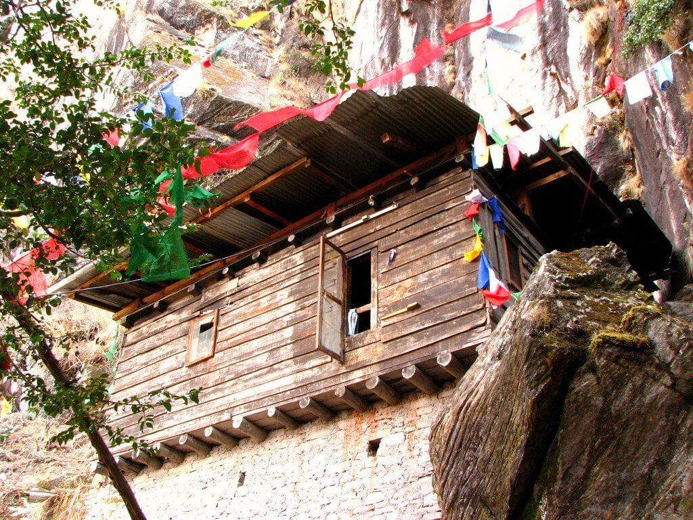

На поиски уникальных буддийских монастырей многие путешественники отправляются в Бутан, в этом миниатюрном государстве находится непреступный монастырь Такцанг-Лакханг.
Буддийский монастырь, название которого означает «гнездо тигрицы», построен на склоне крутых скал на высоте более 3 000 метров над уровнем моря. Согласно историческим данным, монастырь был основан в 1692 году. Ещё задолго до его возведения известные монахи и святые медитировали в местных пещерах.
Из-за необычного расположения кажется, что монастырь буквально парит в воздухе. А если подняться к нему, вам откроется потрясающий вид на живописные пейзажи.
С появлением монастыря связано немало красивых легенд, по одной из которых его основателем является величайший индийский учитель Падмасамбхаве.
На обрывистые скалы ему помогла забраться жена, которая превратилась в тигра и перенесла мужа к пещерам на своей спине.
В настоящее время паломникам представлено несколько вариантов подхода к монастырю, и каждый из них по-своему сложен.
Самым простым считается извилистая тропа, проходящая через густые сосновые леса, еще несколько более сложных троп берут начало на плато с символичным названием «Сто тысяч фей».
С северо-запада маршрут в скальный монастырь пролегает через сосновый бор, пестреющий красочными молитвенными флажками.
В апреле 1998 года с буддийским монастырем случилась беда, в нем разгорелся сильнейший пожар. Первозданный монастырь был разрушен практически полностью, пожар унес жизни нескольких монахов, которые не смогли вовремя покинуть свои кельи. В настоящее время постройка восстановлена с максимальной точностью, на реконструкцию монастыря потребовалось семь лет.

ВВЕРХ